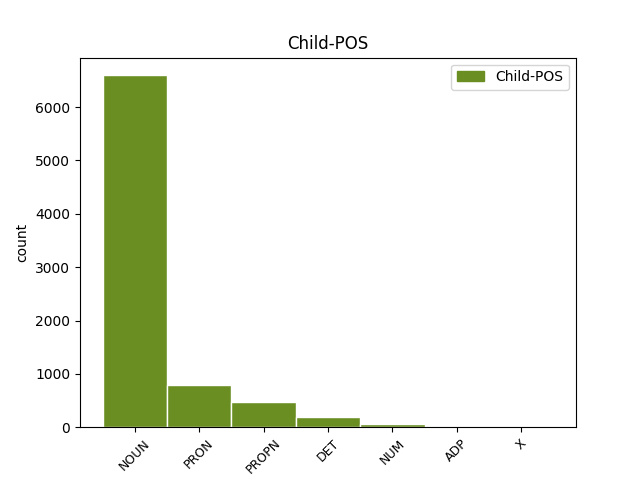

Distribution of features within this leaf

Agreement Rules sorted by frequency.
- When the dependent token is the direct object complements(comp:obj) of the head token, and the head token is ADP and the dependent token is NOUN.
1 Під _ _ _ _ 0 _ _ _
2 час _ _ _ _ 0 _ _ _
3 показу _ _ _ _ 0 _ _ _
4 у _ _ _ _ 0 _ _ _
5 США _ _ _ _ 0 _ _ _
6 , _ _ _ _ 0 _ _ _
7 що _ _ _ _ 0 _ _ _
8 розпочався _ _ _ _ 0 _ _ _
9 18 _ _ _ _ 0 _ _ _
10 вересня _ _ _ _ 0 _ _ _
11 2015 _ _ _ _ 0 _ _ _
12 року _ _ _ _ 0 _ _ _
13 , _ _ _ _ 0 _ _ _
14 протягом _ _ _ _ 0 _ _ _
15 першого _ _ _ _ 0 _ _ _
16 тижня _ _ _ _ 0 _ _ _
17 фільм _ _ _ _ 0 _ _ _
18 був _ _ _ _ 0 _ _ _
19 показаний _ _ _ _ 0 _ _ _
20 у _ _ _ _ 0 _ _ _
21 545 _ _ _ _ 0 _ _ _
22 кінотеатрах _ _ _ _ 0 _ _ _
23 і _ _ _ _ 0 _ _ _
24 зібрав _ _ _ _ 0 _ _ _
25 7 222 035 _ _ _ _ 0 _ _ _
26 $ _ _ _ _ 0 _ _ _
27 , _ _ _ _ 0 _ _ _
28 що _ _ _ _ 0 _ _ _
29 на _ _ _ _ 0 _ _ _
30 той _ _ _ _ 0 _ _ _
31 час _ _ _ _ 0 _ _ _
32 дозволило _ _ _ _ 0 _ _ _
33 йому _ _ _ _ 0 _ _ _
34 зайняти _ _ _ _ 0 _ _ _
35 5 _ _ _ _ 0 _ _ _
36 місце _ _ _ _ 0 _ _ _
37 серед серед ADP Spsg Case=Gen 0 _ _ _
38 усіх _ _ _ _ 0 _ _ _
39 прем'єр прем’єра NOUN Ncfpgn Animacy=Inan|Case=Gen|Gender=Fem|Number=Plur 37 comp:obj _ Id=39ro|LTranslit=preměra|SpaceAfter=No|Translit=preměr
40 . _ _ _ _ 0 _ _ _
1 І _ _ _ _ 0 _ _ _
2 вони _ _ _ _ 0 _ _ _
3 виходили _ _ _ _ 0 _ _ _
4 з _ _ _ _ 0 _ _ _
5 хати _ _ _ _ 0 _ _ _
6 зі _ _ _ _ 0 _ _ _
7 спеченими _ _ _ _ 0 _ _ _
8 обличчями _ _ _ _ 0 _ _ _
9 , _ _ _ _ 0 _ _ _
10 які _ _ _ _ 0 _ _ _
11 сонце _ _ _ _ 0 _ _ _
12 довгі _ _ _ _ 0 _ _ _
13 роки _ _ _ _ 0 _ _ _
14 пражило _ _ _ _ 0 _ _ _
15 ; _ _ _ _ 0 _ _ _
16 воно _ _ _ _ 0 _ _ _
17 й _ _ _ _ 0 _ _ _
18 тепер _ _ _ _ 0 _ _ _
19 зараз _ _ _ _ 0 _ _ _
20 увіссалося _ _ _ _ 0 _ _ _
21 в в ADP Spsa Case=Acc 0 _ _ _
22 них вони PRON Pp-3--pan Case=Acc|Number=Plur|Person=3|PronType=Prs 21 comp:obj _ Id=39bx|LTranslit=vony|SpaceAfter=No|Translit=nych
23 , _ _ _ _ 0 _ _ _
24 та _ _ _ _ 0 _ _ _
25 й _ _ _ _ 0 _ _ _
26 вони _ _ _ _ 0 _ _ _
27 його _ _ _ _ 0 _ _ _
28 несли _ _ _ _ 0 _ _ _
29 до _ _ _ _ 0 _ _ _
30 своїх _ _ _ _ 0 _ _ _
31 домів _ _ _ _ 0 _ _ _
32 . _ _ _ _ 0 _ _ _
1 Під _ _ _ _ 0 _ _ _
2 час _ _ _ _ 0 _ _ _
3 показу _ _ _ _ 0 _ _ _
4 у у ADP Spsl Case=Loc 0 _ _ _
5 США США PROPN Np-pln Animacy=Inan|Case=Loc|Number=Ptan|Uninflect=Yes 4 comp:obj _ Id=39qq|LTranslit=SŠA|SpaceAfter=No|Translit=SŠA
6 , _ _ _ _ 0 _ _ _
7 що _ _ _ _ 0 _ _ _
8 розпочався _ _ _ _ 0 _ _ _
9 18 _ _ _ _ 0 _ _ _
10 вересня _ _ _ _ 0 _ _ _
11 2015 _ _ _ _ 0 _ _ _
12 року _ _ _ _ 0 _ _ _
13 , _ _ _ _ 0 _ _ _
14 протягом _ _ _ _ 0 _ _ _
15 першого _ _ _ _ 0 _ _ _
16 тижня _ _ _ _ 0 _ _ _
17 фільм _ _ _ _ 0 _ _ _
18 був _ _ _ _ 0 _ _ _
19 показаний _ _ _ _ 0 _ _ _
20 у _ _ _ _ 0 _ _ _
21 545 _ _ _ _ 0 _ _ _
22 кінотеатрах _ _ _ _ 0 _ _ _
23 і _ _ _ _ 0 _ _ _
24 зібрав _ _ _ _ 0 _ _ _
25 7 222 035 _ _ _ _ 0 _ _ _
26 $ _ _ _ _ 0 _ _ _
27 , _ _ _ _ 0 _ _ _
28 що _ _ _ _ 0 _ _ _
29 на _ _ _ _ 0 _ _ _
30 той _ _ _ _ 0 _ _ _
31 час _ _ _ _ 0 _ _ _
32 дозволило _ _ _ _ 0 _ _ _
33 йому _ _ _ _ 0 _ _ _
34 зайняти _ _ _ _ 0 _ _ _
35 5 _ _ _ _ 0 _ _ _
36 місце _ _ _ _ 0 _ _ _
37 серед _ _ _ _ 0 _ _ _
38 усіх _ _ _ _ 0 _ _ _
39 прем'єр _ _ _ _ 0 _ _ _
40 . _ _ _ _ 0 _ _ _
1 Особливі _ _ _ _ 0 _ _ _
2 слова _ _ _ _ 0 _ _ _
3 подяки _ _ _ _ 0 _ _ _
4 релігійним _ _ _ _ 0 _ _ _
5 громадам _ _ _ _ 0 _ _ _
6 м _ _ _ _ 0 _ _ _
7 . _ _ _ _ 0 _ _ _
8 Кіцмань _ _ _ _ 0 _ _ _
9 та _ _ _ _ 0 _ _ _
10 с _ _ _ _ 0 _ _ _
11 . _ _ _ _ 0 _ _ _
12 Мамаївці _ _ _ _ 0 _ _ _
13 та _ _ _ _ 0 _ _ _
14 їхнім _ _ _ _ 0 _ _ _
15 настоятелям _ _ _ _ 0 _ _ _
16 - _ _ _ _ 0 _ _ _
17 отцям _ _ _ _ 0 _ _ _
18 Юрію _ _ _ _ 0 _ _ _
19 ( _ _ _ _ 0 _ _ _
20 Кав'юку _ _ _ _ 0 _ _ _
21 ) _ _ _ _ 0 _ _ _
22 та _ _ _ _ 0 _ _ _
23 Івану _ _ _ _ 0 _ _ _
24 ( _ _ _ _ 0 _ _ _
25 Марковському _ _ _ _ 0 _ _ _
26 ) _ _ _ _ 0 _ _ _
27 , _ _ _ _ 0 _ _ _
28 без без ADP Spsg Case=Gen 0 _ _ _
29 яких який DET Pr----pga Case=Gen|Number=Plur|PronType=Rel 28 comp:obj _ Id=39fa|LTranslit=jakyj|Translit=jakych
30 ця _ _ _ _ 0 _ _ _
31 поїздка _ _ _ _ 0 _ _ _
32 була _ _ _ _ 0 _ _ _
33 б _ _ _ _ 0 _ _ _
34 просто _ _ _ _ 0 _ _ _
35 неможливою _ _ _ _ 0 _ _ _
36 . _ _ _ _ 0 _ _ _
1 У _ _ _ _ 0 _ _ _
2 1-му _ _ _ _ 0 _ _ _
3 кварталі _ _ _ _ 0 _ _ _
4 2015 _ _ _ _ 0 _ _ _
5 р _ _ _ _ 0 _ _ _
6 . _ _ _ _ 0 _ _ _
7 підприємством _ _ _ _ 0 _ _ _
8 сплачено _ _ _ _ 0 _ _ _
9 понад понад ADP Spsa Case=Acc 0 _ _ _
10 3 3 NUM Mlc-a Case=Acc|NumType=Card|Uninflect=Yes 9 comp:obj _ Id=39k4|LTranslit=3|Translit=3
11 млрд _ _ _ _ 0 _ _ _
12 . _ _ _ _ 0 _ _ _
13 ₴ _ _ _ _ 0 _ _ _
14 податків _ _ _ _ 0 _ _ _
15 і _ _ _ _ 0 _ _ _
16 зборів _ _ _ _ 0 _ _ _
17 . _ _ _ _ 0 _ _ _
1 Потрібні _ _ _ _ 0 _ _ _
2 матеріали _ _ _ _ 0 _ _ _
3 для _ _ _ _ 0 _ _ _
4 підготовки _ _ _ _ 0 _ _ _
5 до до ADP Spsg Case=Gen 0 _ _ _
6 GMAT GMAT X X Animacy=Inan|Case=Gen|Foreign=Yes|Gender=Masc|Number=Sing|Uninflect=Yes 5 comp:obj _ Id=139d|LTranslit=GMAT|SpaceAfter=No|Translit=GMAT
7 . _ _ _ _ 0 _ _ _
Disagree Examples:
1 Квартира _ _ _ _ 0 _ _ _
2 знаходилася _ _ _ _ 0 _ _ _
3 на _ _ _ _ 0 _ _ _
4 сьомому _ _ _ _ 0 _ _ _
5 поверсі _ _ _ _ 0 _ _ _
6 , _ _ _ _ 0 _ _ _
7 і _ _ _ _ 0 _ _ _
8 Вінстон _ _ _ _ 0 _ _ _
9 , _ _ _ _ 0 _ _ _
10 який _ _ _ _ 0 _ _ _
11 мав _ _ _ _ 0 _ _ _
12 тридцять _ _ _ _ 0 _ _ _
13 дев’ять _ _ _ _ 0 _ _ _
14 років _ _ _ _ 0 _ _ _
15 та _ _ _ _ 0 _ _ _
16 варикозну _ _ _ _ 0 _ _ _
17 виразку _ _ _ _ 0 _ _ _
18 на _ _ _ _ 0 _ _ _
19 правій _ _ _ _ 0 _ _ _
20 щиколотці _ _ _ _ 0 _ _ _
21 , _ _ _ _ 0 _ _ _
22 йшов _ _ _ _ 0 _ _ _
23 дуже _ _ _ _ 0 _ _ _
24 повільно _ _ _ _ 0 _ _ _
25 , _ _ _ _ 0 _ _ _
26 відпочиваючи _ _ _ _ 0 _ _ _
27 по по ADP Spsa Case=Acc 0 _ _ _
28 декілька _ _ _ _ 0 _ _ _
29 разів раз NOUN Ncmpgn Animacy=Inan|Case=Gen|Gender=Masc|Number=Plur 27 comp:obj _ Id=03je|LTranslit=raz|Translit=raziv
30 під _ _ _ _ 0 _ _ _
31 час _ _ _ _ 0 _ _ _
32 сходження _ _ _ _ 0 _ _ _
33 . _ _ _ _ 0 _ _ _
1 Це _ _ _ _ 0 _ _ _
2 була _ _ _ _ 0 _ _ _
3 жахливо _ _ _ _ 0 _ _ _
4 величезна _ _ _ _ 0 _ _ _
5 пірамідальна _ _ _ _ 0 _ _ _
6 будівля _ _ _ _ 0 _ _ _
7 з _ _ _ _ 0 _ _ _
8 блискучого _ _ _ _ 0 _ _ _
9 білого _ _ _ _ 0 _ _ _
10 бетону _ _ _ _ 0 _ _ _
11 , _ _ _ _ 0 _ _ _
12 що _ _ _ _ 0 _ _ _
13 здіймалася _ _ _ _ 0 _ _ _
14 , _ _ _ _ 0 _ _ _
15 тераса _ _ _ _ 0 _ _ _
16 за _ _ _ _ 0 _ _ _
17 терасою _ _ _ _ 0 _ _ _
18 , _ _ _ _ 0 _ _ _
19 на на ADP Spsa Case=Acc 0 _ _ _
20 триста _ _ _ _ 0 _ _ _
21 метрів метр NOUN Ncmpgn Animacy=Inan|Case=Gen|Gender=Masc|Number=Plur 19 comp:obj _ Id=046n|LTranslit=metr|Translit=metriv
22 угору _ _ _ _ 0 _ _ _
23 . _ _ _ _ 0 _ _ _
1 Він _ _ _ _ 0 _ _ _
2 занурив _ _ _ _ 0 _ _ _
3 ручку _ _ _ _ 0 _ _ _
4 з _ _ _ _ 0 _ _ _
5 пером _ _ _ _ 0 _ _ _
6 у _ _ _ _ 0 _ _ _
7 чорнило _ _ _ _ 0 _ _ _
8 та _ _ _ _ 0 _ _ _
9 на на ADP Spsa Case=Acc 0 _ _ _
10 декілька _ _ _ _ 0 _ _ _
11 секунд секунда NOUN Ncfpgn Animacy=Inan|Case=Gen|Gender=Fem|Number=Plur 9 comp:obj _ Id=050h|LTranslit=sekunda|Translit=sekund
12 завагався _ _ _ _ 0 _ _ _
13 . _ _ _ _ 0 _ _ _
1 У у ADP Spsa Case=Acc 0 _ _ _
2 останні _ _ _ _ 0 _ _ _
3 тридцять _ _ _ _ 0 _ _ _
4 секунд секунда NOUN Ncfpgn Animacy=Inan|Case=Gen|Gender=Fem|Number=Plur 1 comp:obj _ Id=06pt|LTranslit=sekunda|Translit=sekund
5 Ненависті _ _ _ _ 0 _ _ _
6 , _ _ _ _ 0 _ _ _
7 неконтрольовані _ _ _ _ 0 _ _ _
8 вигуки _ _ _ _ 0 _ _ _
9 люті _ _ _ _ 0 _ _ _
10 почали _ _ _ _ 0 _ _ _
11 лунати _ _ _ _ 0 _ _ _
12 від _ _ _ _ 0 _ _ _
13 половини _ _ _ _ 0 _ _ _
14 людей _ _ _ _ 0 _ _ _
15 у _ _ _ _ 0 _ _ _
16 кімнаті _ _ _ _ 0 _ _ _
17 . _ _ _ _ 0 _ _ _
1 У _ _ _ _ 0 _ _ _
2 новопоставленого _ _ _ _ 0 _ _ _
3 капітана _ _ _ _ 0 _ _ _
4 жижки _ _ _ _ 0 _ _ _
5 трясуться _ _ _ _ 0 _ _ _
6 від _ _ _ _ 0 _ _ _
7 страху _ _ _ _ 0 _ _ _
8 , _ _ _ _ 0 _ _ _
9 що _ _ _ _ 0 _ _ _
10 його _ _ _ _ 0 _ _ _
11 ніхто _ _ _ _ 0 _ _ _
12 не _ _ _ _ 0 _ _ _
13 слухатиме _ _ _ _ 0 _ _ _
14 ( _ _ _ _ 0 _ _ _
15 а _ _ _ _ 0 _ _ _
16 згодом _ _ _ _ 0 _ _ _
17 , _ _ _ _ 0 _ _ _
18 власне _ _ _ _ 0 _ _ _
19 , _ _ _ _ 0 _ _ _
20 так _ _ _ _ 0 _ _ _
21 і _ _ _ _ 0 _ _ _
22 стається _ _ _ _ 0 _ _ _
23 ) _ _ _ _ 0 _ _ _
24 , _ _ _ _ 0 _ _ _
25 а _ _ _ _ 0 _ _ _
26 за за ADP Spsa Case=Acc 0 _ _ _
27 кілька _ _ _ _ 0 _ _ _
28 хвилин хвилина NOUN Ncfpgn Animacy=Inan|Case=Gen|Gender=Fem|Number=Plur 26 comp:obj _ Id=090p|LTranslit=chvylyna|Translit=chvylyn
29 екіпаж _ _ _ _ 0 _ _ _
30 самовільно _ _ _ _ 0 _ _ _
31 міняє _ _ _ _ 0 _ _ _
32 курс _ _ _ _ 0 _ _ _
33 корабля _ _ _ _ 0 _ _ _
34 , _ _ _ _ 0 _ _ _
35 тому _ _ _ _ 0 _ _ _
36 що _ _ _ _ 0 _ _ _
37 їм _ _ _ _ 0 _ _ _
38 не _ _ _ _ 0 _ _ _
39 хочеться _ _ _ _ 0 _ _ _
40 ще _ _ _ _ 0 _ _ _
41 кілька _ _ _ _ 0 _ _ _
42 років _ _ _ _ 0 _ _ _
43 провести _ _ _ _ 0 _ _ _
44 в _ _ _ _ 0 _ _ _
45 кріосні _ _ _ _ 0 _ _ _
46 . _ _ _ _ 0 _ _ _